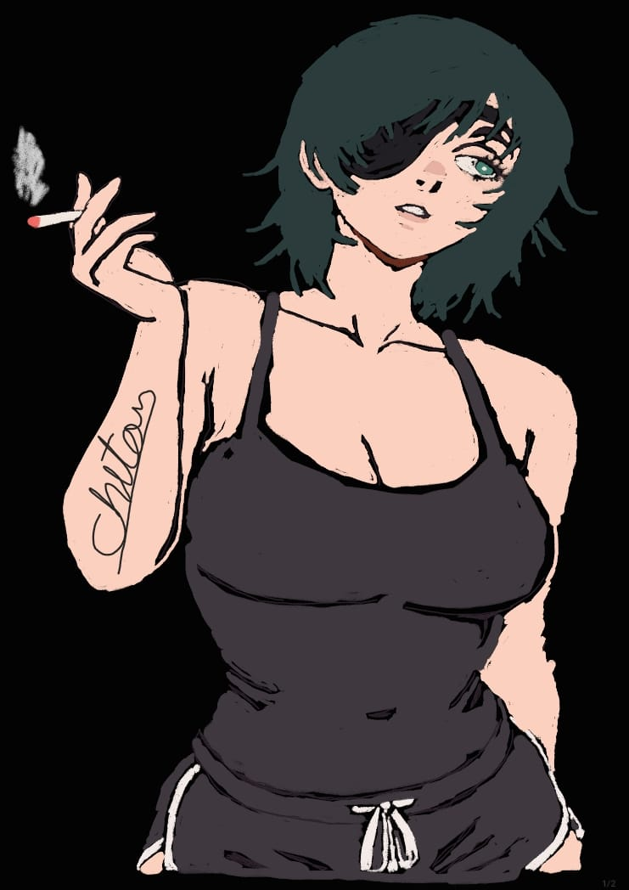

Himeno
Himeno (姫ひめ野の?) is a supporting character in the Public Safety Saga. She was a Public Safety Devil Hunter working under Makima's special squad, partnered with Aki Hayakawa.Himeno was a very tall and voluptuous young woman with smooth and slightly unkempt neck-length black hair, turquoise-colored eyes where she wore a black eyepatch over her right eye.
She was usually seen wearing her suit with a black tie.Past
In the past when Himeno and Aki Hayakawa were assigned as partners through Kishibe, she used to have longer and straight hair that touched her shoulders, bandages over her right eye as well as a sling on her right arm (which she removed right after they began working together, but she still kept her hair to shoulder-length) and she was slightly skinnier back then.Himeno was shown to be a mature and experienced superior to the new recruits working under her. She generally carries herself with upbeat body language and was capable of staying calm under extremely stressful situations, such as the initial phase of her group's battle against the Eternity Devil. Himeno motivated Denji by offering him a french kiss, implying that she's at least somewhat perceptive of the people around her and was willing to take unorthodox approaches in order to ensure the best possible results from him.[3]
Himeno was shown to be very efficient and blunt in her duty as a Devil Hunter. She responded to a small and seemingly insignificant Devil by almost immediately using her Ghost Devil to subdue it.[4] She was shown to have a more stern side and little tolerance for behavior from new recruits that would endanger or harm her subordinates, as she swiftly took out Kobeni Higashiyama when the latter attempted to stab Denji.[5]
Himeno was shown to be a rather caring and empathetic person as she cared for the well-being of her fellow Devil Hunters, as shown by her desire to not betray Denji during their first mission together.[6] In a brief flashback scene, Himeno was shown to be very patient and tolerant to those that are suffering when a late partner's former girlfriend lashed out and slapped her out of grief.[7]
However, despite this cheerful presentation, Himeno also held an extremely pessimistic worldview as a result of having witnessed multiple partners die suddenly in her line of work. This knowledge that Devil Hunters typically die as a result of their career combined with the teachings of her master eventually lead to her developing a nicotine addiction as a coping mechanism. Himeno even went as far as to pressure Aki Hayakawa into taking up smoking as a new recruit, citing the fact that Devil Hunters don't usually live long enough to suffer from the negative side effects of prolonged use of tobacco anyway.[8]
Himeno had strongly internalized another old teaching of her master: that only Devil Hunters "who have a couple of screws loose" are ultimately successful, due to the general sense of unpredictability presented by their willingness to do unusual things to take down opponents.[9]
Himeno cared deeply for Aki whom she trained as a new recruit and had a close personal bond with. In fact, Himeno considered the side effects of Aki using his sword bad enough that it would be worth sacrificing Denji to prevent. This puts into perspective how much she valued Aki's well-being